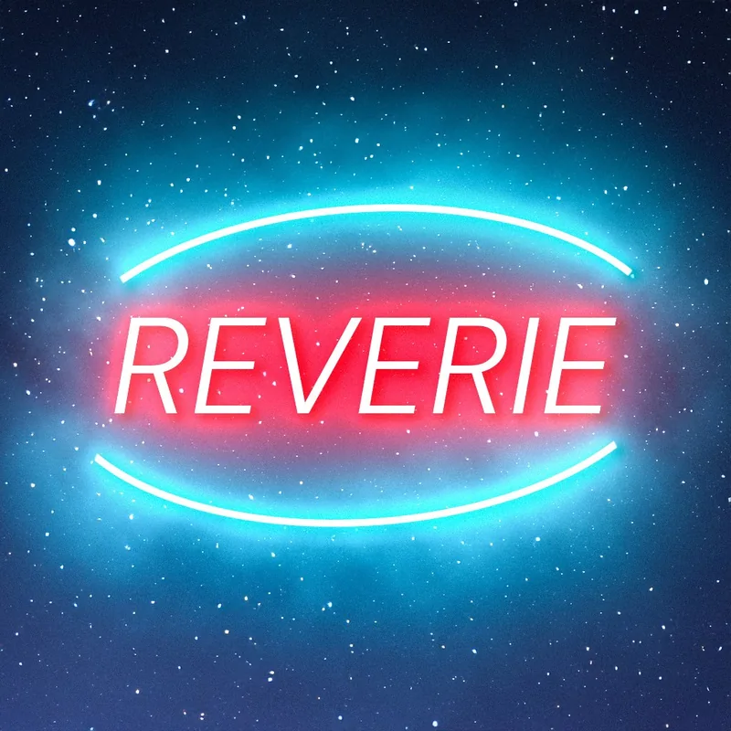
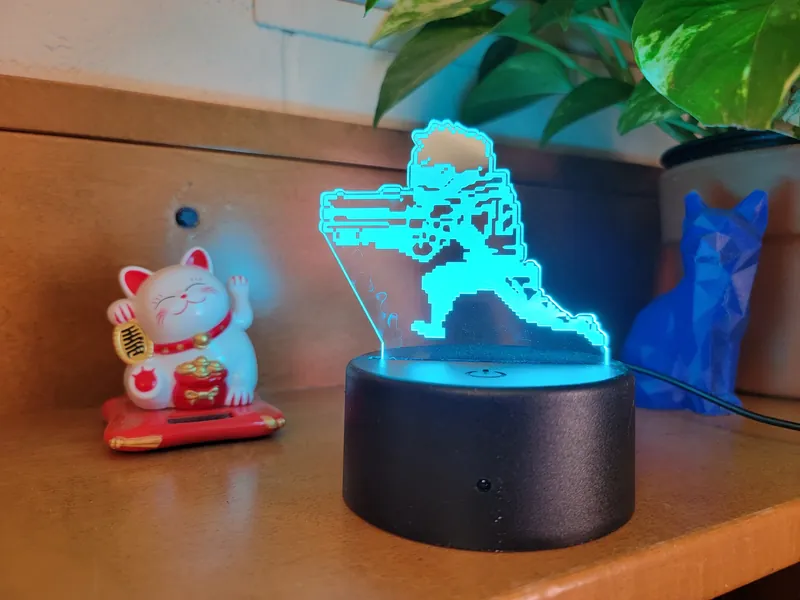

On this page
TL;DR
After getting certified to use a university makerspace, I discovered a passion for laser cutting and created unique acrylic LED lights. This hobby turned into a small business, Reverie Engravings, where I sold custom designs, including Spotify song engravings and Overwatch-inspired artwork. Setting up and running the Etsy shop was a rewarding learning experience, but the constant need to stay ready for sales proved overwhelming. Eventually, I shut down the store to focus on other projects, though my interest in entrepreneurship remains strong, always seeking new opportunities to innovate and profit.
Once I got certified to use my university's makerspace, I made a LOT of stuff. I didn't have a cutting board, so I made one. I 3D printed a bowling pin, and a bunch of random stuff. But one machine stood out to me. It was the laser cutter. And drawing inspiration from a beginner laser cutter project, I made my first acrylic LED lights.
Process
Basically, the laser cutter cuts out a shape, and a small LED light illuminates it at the bottom. The laser cutter uses a (you guessed it) high powered laser to burn off small amounts of material, either engraving it or cutting straight through. When illuminated from the bottom, the engravings will light up and stand out, and the light will simply pass through the rest of the clear acrylic.
After I made a few for myself, I thought they were really cool, so I decided to sell them. I had never made a small business before, so it was exciting to learn.
It was time to set up everything I needed for the business. An etsy page, a linkedin page, an instagram page, and a couple tax forms, and I was ready! I dubbed my new business Reverie Engravings.
I also needed a logo, which I designed in Photoshop with inspiration from the open signs in front of stores and restaurants.

I sold really specific products: I started with Spotify engravings of people's songs on Spotify, making a custom design for each customer's favorite song, but then I went with some cooler designs of characters from my favorite game Overwatch. I took some of the in-game cosmetics and converted them into vector files in Adobe Illustrator, which I then produced with huge sheets of acrylic.


They ended up pretty good, and I kept a small supply in a plastic bin along with all the materials I would need for packing and shipping. A few orders came in, and I sent them off.
Sunset
Eventually, one day, I just shut the store down. It was a lot to keep up with, not because I was getting a lot of sales, but because I constantly needed to be aware that I might get a sale. To expedite shipping, I try to pack the order as soon as possible and get it to the USPS, but if it's closed for the day, I'm just out of luck. And I shifted my time to other projects. Although I basically shut down Reverie Engravings, I'm still definitely interested in entrepreneurship, and I always look for opportunities to try to start something myself or turn something I have into sweet, sweet, profit.